유통관리사-2급 (2024-11-16 기출문제)
1과목: 유통물류일반
1. 중간상이 필요한 이유 중 집중준비의 원리에 대한 설명으로 가장 옳은 것은?
- 제조업자는 생산을, 유통업자는 유통을 전문화함으로써 보다 효율적이고 경제적일 수 있다.
- 유통경로 상에 가능하면 많은 수의 도매상을 개입시켜서 경로구성원에 의해 보관되는 제품의 총량을 감소시킬 수 있다.
- 중간상에게 유통기능을 분담시키는 것이 비용면에서 훨씬 유리할 수 있다.
- 중간상이 참여하면 생산자와 소비자 간의 거래빈도수를 감소시켜 거래비용을 절감할 수 있다.
- 소비자가 원하는 상품을 항상 준비하여 24시간 구매할 수 있는 편의점처럼 시간 효용을 제공한다.
(정답률: 알수없음)
2. 유통경로 상에서 수행되는 유통의 기능 중 거래 및 물적유통이 원활하게 이루어지도록 보조하는 조성기능에 해당되지 않는 것은?
- 소비자 또는 생산자에게 자금을 대부함으로써 거래를 원활하게 하는 기능
- 재고유지 및 상품의 진부화를 포함한 여러 가지 위험을 부담하는 기능
- 예상판매량, 가격정보, 소비자 정보 등을 생산자에게 제공하는 기능
- 생산시점과 소비시점의 차이를 연결함으로써 장소 효용을 창조하는 기능
- 상품을 품질 수준에 따라 분류하거나 규격화하는 기능
(정답률: 알수없음)
3. 소매업 발전이론 중 아래 글상자의 괄호 안에 들어갈 이론을 순서대로 나열한 것으로 옳은 것은?
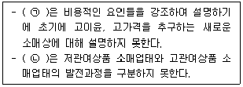
- ㉠ 변증법적 이론, ㉡ 진공지대 이론
- ㉠ 소매상 적응행동 이론, ㉡ 진공지대 이론
- ㉠ 소매상 수레바퀴 이론, ㉡ 변증법적 이론
- ㉠ 소매상 수레바퀴 이론, ㉡ 소매점 아코디언 이론
- ㉠ 소매점 아코디언 이론, ㉡ 소매상 적응행동 이론
(정답률: 알수없음)
4. 구매의 전략적 중요성과 시장의 복잡성을 기준으로 공급업체를 세분화하는 기법으로 옳은 것은?
- 공급업체 세분화 풍차
- Same Page 프레임워크
- 균형성과지표
- 크랄직 매트릭스(Kraljic Matrix)
- SWOT 분석표
(정답률: 알수없음)
5. 아래 글상자에서 유통구성원의 기능 중 쌍방흐름으로만 바르게 나열한 것은?
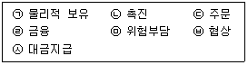
- ㉢, ㉣, ㉤
- ㉣, ㉤, ㉥
- ㉡, ㉢, ㉣, ㉤
- ㉡, ㉤, ㉥, ㉦
- ㉠, ㉡, ㉢, ㉣, ㉤, ㉥, ㉦
(정답률: 알수없음)
6. 디지털기술의 발전으로 인한 유통산업의 환경변화에 대한 설명으로 가장 옳지 않은 것은?
- 소매기술을 통해 온라인과 오프라인을 결합한 쇼핑경험을 제공할 수 있다.
- 온라인과 오프라인의 경계 구분이 무의미할 정도로 온·오프융합시대로 접어들고 있다.
- 경쟁도구로서 첨단기술의 중요성이 증가하고 있다.
- 플랫폼 기반의 유통비즈니스가 주목받고 있다.
- 옴니채널의 등장으로 업태 간 경쟁은 해소되었지만 업태 내 경쟁은 격화되었다.
(정답률: 알수없음)
7. 환경분석을 통해 소매업체가 추구할 수 있는 다양한 성장 전략에 관한 설명으로 가장 옳지 않은 것은?
- 시장침투를 증가시키기 위해서는 표적시장에 보다 많은 점포를 개설하거나 기존 점포의 영업시간을 늘리기도 한다.
- 고객에게 드레스를 판매한 후 그에 어울릴 스카프를 판매하는 교차판매는 시장다각화전략의 예이다.
- 관련다각화는 현재의 표적시장과 새로운 사업기회가 공통점이 있는 경우로 동일한 물류시스템을 활용하기도 한다.
- PB를 기획하던 소매업체가 생산 공장을 소유하는 것은 일종의 수직적 통합이다.
- 소매업태 개발기회는 동일한 표적시장의 고객에게 다른 소매믹스를 가진 새로운 소매업태를 제공하는 방식이다.
(정답률: 알수없음)
8. 물류의 중요성이 강조되는 이유에 대한 설명으로 옳지 않은 것은?
- 물류서비스를 개선하고 물류비 절감을 통하여 기업은 고객에 대한 서비스 수준을 높일 수 있으며 이는 높은 수요를 창출할 수 있기 때문이다.
- 소비자의 제품에 대한 다양한 요구는 재고 저장단위수의 증대를 필요로 하며 재고불균형 등의 문제를 발생시키기 때문이다.
- 소비자의 상품에 대한 저가 압력은 능률적이며 간접적인 분배경로의 등장을 강요하게 되었기 때문이다.
- 가격결정에 있어 신축성을 부여하기 위해서는 개별시장까지 운송에 소요되는 실제 분배비용을 산출하기보다 전국적인 평균비용에 의존하게 되었기 때문이다.
- 재고비용 절감을 위해 주문 횟수를 증가시킬 경우, 증가된 주문 횟수를 처리할 새로운 시스템의 도입이 필요하기 때문이다.
(정답률: 알수없음)
9. 유통업체가 해외로 진출하기 위한 진입방식에 대한 설명으로 가장 옳지 않은 것은?
- 직접투자는 높은 수준의 투자를 요구하지만 높은 통제권을 가진다.
- 프랜차이즈의 경우 진입업체의 위험은 낮지만 통제력이 제한적일 수 있다.
- 직접 투자를 통해 진입하지 않고 전략적 제휴를 통해 현지업체의 물류와 창고 보관활동을 이용하기도 한다.
- 합작투자는 진입업체의 위험은 높지만 현지파트너에게 시장에 대한 정보를 제공받을 수 있다.
- 해외에 프랜차이즈 회사를 설립하는 경우 가맹계약해지, 간판 교체 등과 같이 잠재적 경쟁자가 생기게 될 위험이 있다.
(정답률: 알수없음)
10. 아웃소싱과 관련된 설명으로 가장 옳지 않은 것은?
- 해외아웃소싱의 경우 국가에 따라 부정적인 원산지 효과를 얻기도 한다.
- 투자비용이 증가하기에 재무적 위험이 늘어나지만 전체 수익관점에서는 이익이 증가한다.
- 다른 채널 파트너의 규모의 경제로부터 이익을 얻을 수 있다.
- 분업의 원리에 의해 파트너가 특정기능을 더 효율적으로 실행하면 그만큼의 이익을 얻을 수 있다.
- 핵심기능까지 과감하게 아웃소싱하는 기업들이 등장하고 있는 추세이다.
(정답률: 알수없음)
11. 경로목표를 달성하기 위해 경로전략에서 다루는 사항들에 대한 설명으로 옳지 않은 것은?
- 특정 지역 범위 내에 얼마나 많은 중간상을 둘 것인가에 관한 고객커버리지정책을 다룬다.
- 유통경로를 통한 가격과 가격수준 결정을 위한 가격결정정책을 다룬다.
- 전속거래, 상품 묶음과 같은 상품계열정책을 다룬다.
- 경로구성원의 능력 평가 등과 같은 경로구성원의 선별과 결정정책을 다룬다.
- 경로기능을 경로구성원간 배분하는 과정을 다룬 경로소유권 정책이 있다.
(정답률: 알수없음)

12. 전자문서 및 전자거래 기본법(법률 제18478호, 2021. 10. 19., 일부개정)에서 명시하고 있는 전자거래사업자의 일반적 준수사항으로 옳지 않은 것은?
- 소비자가 쉽게 접근·인지할 수 있도록 약관의 제공 및 보존
- 소비자가 자신의 주문을 취소 또는 변경할 수 있는 절차의 마련
- 소비자의 불만과 요구사항을 신속하고 공정하게 처리하기 위한 절차의 마련
- 거래의 증명 등에 필요한 거래기록의 일정 기간 보존
- 정부나 기업이 소비자를 위해 마련한 각종 제도를 홍보할 수 있는 절차의 마련
(정답률: 알수없음)
13. 아래 글상자의 내용 중 국제기업 조직 관련 국제사업부의 장점 설명으로 옳은 것을 모두 고르면?
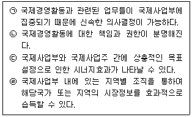
- ㉠, ㉢
- ㉠, ㉣
- ㉡, ㉢
- ㉠, ㉡, ㉢
- ㉠, ㉡, ㉣
(정답률: 알수없음)
14. 프로젝트 조직에 대한 내용으로 가장 옳지 않은 것은?
- 과제 진행에 따라 인력 구성의 탄력성이 존재한다.
- 목적달성을 지향하는 조직이므로 구성원들의 과제해결을 위한 사기를 높일 수 있다.
- 기업 전체의 목적보다는 사업부만의 목적달성에 더 관심을 기울이게 된다.
- 해당 조직에 파견된 사람은 선택된 사람이라는 우월감이 조직 단결을 저해하기도 한다.
- 전문가로 구성된 일시적인 조직이므로 그 조직 관리자의 지휘능력이 중요하다.
(정답률: 알수없음)
15. 아래 글상자의 주요 재무지표들 중 기업의 수익성을 측정할 수 있는 비율들만으로 나열된 것은?
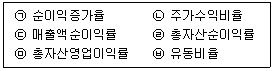
- ㉡, ㉢
- ㉠, ㉤, ㉥
- ㉢, ㉣, ㉤
- ㉣, ㉤, ㉥
- ㉠, ㉡, ㉢, ㉣, ㉤
(정답률: 알수없음)
16. 아래 글상자의 괄호 안에 들어갈 용어로 옳은 것은?
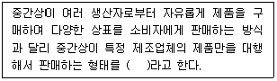
- 사입제도
- 위탁제도
- 위탁판매제도
- 전속대리점제도
- MWC업태
(정답률: 알수없음)
17. 인사관리 패러다임의 변화로 가장 옳지 않은 것은?
- 연공중심에서 능력중심으로 변화하고 있다.
- 표준형 인재관에서 이질적 인재관으로 변화하고 있다.
- 내부노동시장에서 외부노동시장으로 변화하고 있다.
- 반응적 인사에서 대응적 인사로 변화하고 있다.
- 인건비에 대해 수익관점에서 비용관점으로 변화하고 있다.
(정답률: 알수없음)
18. 피터 드러커(Peter Drucker)의 최고경영자 자질론에 대한 내용으로 가장 옳지 않은 것은?
- 경영목표설정과 목표관리를 성공적으로 수행할 줄 알아야 한다.
- 공통의 목표를 수행하는 데 통합된 팀워크를 조직하고 활용할 줄 알아야 한다.
- 전략적 의사 결정을 수행할 능력과 목표에 대한 성공적인 확신과 전략을 가지고 있어야 한다.
- 기업 내·외부 환경변화에 대한 대책은 실무자 단위에서 수립해야 하므로, 최고경영자는 이보다 환경변화에 대응하는 각종 위험부담을 신속히 파악하는 데 집중해야 한다.
- 경영관리를 미시적 관리와 거시적 관리로 구분하여 수행할 줄 알아야 하는데 미시적 관리는 기업경영, 거시적 관리는 정부정책적 관리로서 이 둘을 통합하여 조화를 이룰 줄 알아야 한다.
(정답률: 알수없음)
19. 아래 글상자의 괄호 안에 들어갈 보관의 원칙을 순서대로 바르게 나열한 것은?
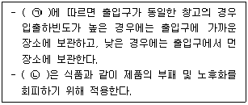
- ㉠ 통로대면보관의 원칙, ㉡ 선입선출의 법칙
- ㉠ 통로대면보관의 원칙, ㉡ 형상특성의 원칙
- ㉠ 동일성, 유사성의 원칙, ㉡ 중량특성의 원칙
- ㉠ 회전대응보관의 원칙, ㉡ 선입선출의 원칙
- ㉠ 네트워크보관의 원칙, ㉡ 명료성의 원칙
(정답률: 알수없음)
20. 도소매업체의 물류관리를 위해 필요한 의사결정내용으로 가장 옳지 않은 것은?
- 상품을 어디에 보관해야 하는가?
- 주문을 어떻게 처리해야 하는가?
- 가격을 어떻게 설정해야 하는가?
- 어느 정도의 물량을 보관해야 하는가?
- 상품을 어떻게 보관해야 하는가?
(정답률: 알수없음)
21. 복합물류단지의 여러 가지 기능 중 물류기능에 해당되지 않는 것은?
- 지역 간 화물의 수송 및 하역 거점 기능을 수행하는 환적기능
- 판매할 상품의 디자인과 기능을 잠재수요자에게 직접보여줌으로써 구매욕구를 증진시키는 전시기능
- 생산자가 일괄생산한 반제품을 수요자의 요구에 따라 조립 또는 가공하는 기능
- 불특정 화주의 화물을 컨테이너에 혼재하거나 컨테이너로부터 분류하는 컨테이너 처리기능
- 수출입화물의 통관업무를 수행하는 통관기능
(정답률: 알수없음)
22. 풀필먼트센터에 대한 설명으로 가장 옳지 않은 것은?
- 복잡한 유출수송(outbound) 경로 관리를 위해 최신기술을 활용한 시스템을 구축한다.
- UPC라벨이나 RFID를 통해 상품 수령과 검수가 이루어진다.
- 유행에 민감한 패션상품이나 부패가능성이 높은 경우는 저장보다 크로스도킹을 이용한다.
- 플로어 레디(floor-ready)상품은 바로 판매될 수 있는 상태로 배송하는 것을 말한다.
- 티케팅(ticketing)과 마킹(marking)은 시간과 장소를 많이 필요로 하므로 점포에서 수행하는 것이 효과적이다.
(정답률: 알수없음)
23. 경로성과의 측정을 위한 각종 차원에 대한 설명으로 옳지 않은 것은?
- 효율성은 투입 대 산출의 비율로 정의되며 서비스 성과 제공, 잠재수요 자극으로 나누어 파악한다.
- 형평성은 해당 유통경로가 제공하는 혜택이 세분시장에 얼마나 고르게 배분되었는가를 말한다.
- 효과성은 목표지향적인 성과측정치를 나타내는 평가척도에 해당된다.
- 생산성은 자원의 투입에 의해 생산되는 서비스 성과의 양을 말한다.
- 수익성은 재무적 효율성을 나타내는 지표를 말한다.
(정답률: 알수없음)
24. 경제적 주문량과 관련한 설명으로 가장 옳지 않은 것은?
- 재고의 보유비용과 주문비용을 최소화하는 주문량이다.
- 주문비용은 주문을 처리하는 비용으로 주문량에 비례한다.
- 품절이 발생하지 않는 것으로 가정한다.
- 수요는 변동이 없고 예측가능하다고 가정한다.
- 수량할인은 없는 것으로 가정한다.
(정답률: 알수없음)
25. 다양한 물류 활동을 기능에 의해 분류할 경우 기본 활동에 포함되는 것들만 바르게 나열한 것은?
- 운송기능, 유통가공기능, 관리기능
- 포장기능, 하역기능, 보관기능
- 정보기능, 관리기능, 운송기능
- 포장기능, 관리기능, 정보기능
- 유통가공기능, 하역기능, 정보기능
(정답률: 알수없음)
2과목: 상권분석
26. 대표적 복합상업시설인 쇼핑센터에서는 다양한 업종과 서비스를 조합하는 테넌트 믹스(tenant mix)전략이 중요하다. 여기서 말하는 '테넌트(tenant)'의 의미로서 가장 옳은 것은?
- 앵커스토어
- 임차점포
- 자석점포
- 부동산 개발업자
- 상품 공급업자
(정답률: 알수없음)
27. 상권은 유형에 따라 서로 다른 특성을 갖는다. 상권유형별 일반적 특성을 비교하여 설명한 내용 중에서 가장 옳지 않은 것은?
- 도심상권은 중심업무지구(CBD)를 포함하는데 부도심 또는 근린상권보다 상대적으로 상권의 범위가 넓고 소비자들의 체류시간이 길다.
- 부도심상권은 도시 내 주요 간선도로의 결절점이나 역세권을 중심으로 형성되는 경우가 많으며 도시전체의 소비자를 유인하지는 못한다.
- 근린상권은 점포인근 거주자들을 주요 소비자로 볼 수 있으며 생활필수품을 취급하는 업종의 점포들이 입지하는 경향이 있다.
- 역세권상권은 지하철역이나 철도역을 중심으로 형성되며 지상의 도로 교통망과 연결되어 지상과 지하의 입체적 상권으로 고밀도 개발이 이루어지는 경우가 많다.
- 아파트상권은 단지 내 거주하는 고정고객 비중이 높아 안정적인 수요확보가 가능하고 보통 외부고객 유치가 쉬워서 상대적으로 상권확대 가능성이 높다.
(정답률: 알수없음)
28. 지리정보시스템(GIS)을 활용하여 보다 깊이 있는 상권분석이 가능해졌다. 지리정보시스템의 대표적 기능 중 아래의 글상자 내용에 해당하는 것은?
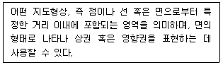
- 위상(topology)
- 중첩(overlay)
- 버퍼(buffer)
- 주제도 작성
- 데이터 및 공간조회
(정답률: 알수없음)
29. 일정한 지리적 공간 안에서 경쟁점포들이 분산해서 입지하는 이유를 설명하는 이론으로 가장 옳은 것은?
- 허프(D. L. Huff)의 상권분석모형
- 허프(D. L. Huff)의 수정 상권분석모형
- 크리스탈러(W. Christaller)의 중심지이론
- 레일리(W. Reilly)의 소매인력법칙
- 컨버스(P. D. Converse)의 분기점모형
(정답률: 알수없음)
30. 아래 글상자의 괄호 안에 들어갈 항목으로 가장 옳은 것은?
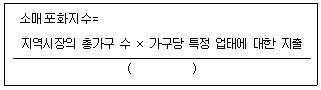
- 특정 업태의 총매출액
- 특정 업태의 총매장면적
- 특정 업태의 고객 수
- 특정 업태의 총영업이익
- 특정 업태의 점포 수
(정답률: 알수없음)
31. 점포 입지 후보지에 대한 매력도 분석과 관련한 내용으로 가장 옳지 않은 것은?
- 소매포화지수(IRS: index of retail saturation)는 지역시장 소매점들의 공급대비 수요잠재력을 측정할 수 있는 지표이다.
- 시장성장잠재력(MEP: market expansion potential)은 지역시장이 미래에 신규 수요를 창출할 수 있는 잠재력을 반영하는 지표이다.
- 소매포화지수(IRS)는 특정 지역 시장의 현재 상태를 나타내지만 시장성장잠재력(MEP)을 반영하지 못하는 단점이 있다.
- 시장성장잠재력(MEP)이 높을수록 소매포화지수(IRS)도 높게 나타난다.
- 신규점포가 입지할 지역시장의 매력도를 평가할 때 기존 점포들에 의한 시장포화 정도뿐만 아니라 시장성장잠재력(MEP)을 함께 고려해야 한다.
(정답률: 알수없음)
32. 아래 글상자의 내용 가운데 보편적으로 좋은 점포입지만을 나열한 것으로 가장 옳은 것은?
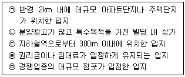
- ㉠, ㉡, ㉢
- ㉠, ㉡, ㉤
- ㉠, ㉢, ㉣
- ㉡, ㉢, ㉤
- ㉢, ㉣, ㉤
(정답률: 알수없음)
33. 점포선택모형의 하나인 Huff모형을 이용하여 각 점포에 대한 소비자의 선택확률 또는 매출액을 추정할 수 있다. 이 과정을 구성하기 위한 정보 수집으로 가장 옳지 않은 것은?
- 점포의 매장면적에 대한 소비자의 민감도 계수 추정
- 개별소비자 또는 세분지역(zone)과 각 점포 사이의 거리 측정
- 소비자가 방문할 가능성이 있는 각 점포의 매장면적자료 확보
- 상권 내 소비자들이 고려하는 점포들(분석대상 점포)의 파악
- 거리에 대한 소비자의 민감도 계수의 점포별 추정
(정답률: 알수없음)
34. 다음 글상자에서 설명하고 있는 출점전략으로 가장 옳은 것은?
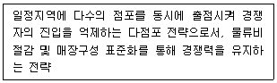
- 인지도 확대전략
- 시장력 우선전략
- 시장력 흡수전략
- 지역 집중전략
- 임대차계약 조건부 출점 전략
(정답률: 알수없음)
35. “국토의 계획 및 이용에 관한 법률(법률 제20234호, 2024. 2. 6., 일부개정)이 정한 “자연녹지지역” 안에 건축할 수 있는 “유통산업발전법”(법률 제19117호, 2022. 12. 27., 타법개정) 상의 “대규모점포”로 가장 옳은 것은?
- 대규모점포는 자연녹지지역 내에 건축할 수 없다.
- 백화점
- 전문점
- 쇼핑센터
- 복합쇼핑몰
(정답률: 알수없음)
36. 넬슨(R. L. Nelson)의 소매입지 선정원리 중에서 아래 글상자의 괄호 안에 들어갈 내용을 순서대로 나열한 것으로 가장 옳은 것은?
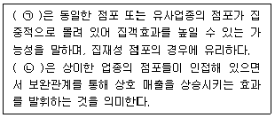
- ㉠ 양립성, ㉡ 누적적 흡인력
- ㉠ 양립성, ㉡ 경합의 최소성
- ㉠ 누적적 흡인력, ㉡ 양립성
- ㉠ 상권의 잠재력, ㉡ 경합의 최소성
- ㉠ 누적적 흡인력, ㉡ 경합의 최소성
(정답률: 알수없음)
37. 대규모 쇼핑센터에는 다양한 공간구성요소들이 존재한다. 아래의 글상자에서 설명하는 요소들의 순서로 가장 옳은 것은?
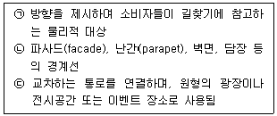
- ㉠ 통로(path), ㉡ 구역(district), ㉢ 결절점(node)
- ㉠ 에지(edge), ㉡ 지표(landmark), ㉢ 구역(district)
- ㉠ 지표(landmark), ㉡ 에지(edge), ㉢ 결절점(node)
- ㉠ 결절점(node), ㉡ 구역(district), ㉢ 통로(path)
- ㉠ 지표(landmark), ㉡ 구역(district), ㉢ 결절점(node)
(정답률: 알수없음)
38. 입지영향인자의 하나인 라이프 스타일을 파악할 수 있는 소비자 특성은 AIO 분석을 통해 파악해 볼 수 있다. 이중 AIO분석과 관련된 항목으로 가장 옳지 않은 것은?
- 활동(activities)
- 나이(age)
- 관심사(interests)
- 의견(opinions)
- 심리도식적 특성(psychographics)
(정답률: 알수없음)
39. 기존 점포를 임차하여 점포개점을 계획할 때 고려해야 할 사항으로 가장 옳지 않은 것은?
- 임차 계약 기간
- 점포 소유자의 전문성
- 점포의 전용 면적과 형태
- 점포의 인계 사유
- 점포 임차 시 소요되는 비용
(정답률: 알수없음)
40. 다양한 내·외적 환경변화에 의해 어려운 경영상황에 직면하면 소매점은 적절한 개선책을 마련하거나 폐업을 고려하는 등의 대책을 세울 수 있다. 다음 중 상황에 맞는 대책으로서 가장 옳지 않은 것은?
- 지역상권의 수명주기가 쇠퇴기에 접어든 경우 – 새로운 아이템 발굴로 업종 변경
- 업종이 상권에 적합하지 않게 된 경우 - 업종전환 또는 점포 매각
- 경쟁점포가 신규로 출현한 경우 - 판촉활동 등 마케팅활동 강화
- 상권 내 유사 점포와 비교했을 때 경쟁력이 떨어지는 경우 - 상권분석 및 벤치마킹을 통한 경쟁력 제고
- 재료비 및 인건비 등 상승으로 인한 자금관리 위기 - 원가절감으로 손익분기점 낮추기
(정답률: 알수없음)
41. 상업지의 입지조건과 관련된 설명으로 가장 옳지 않은 것은?
- 획지는 건축용으로 구획정리를 할 때 단위가 되는 땅으로 인위적, 자연적, 행정적 조건에 의해 다른 토지와 구별되는 토지를 말한다.
- 지하철역과 관련해서는 승차객수보다 하차객수가 중요하며 일반적으로 출근동선보다는 퇴근동선일 경우가 더 좋은 상업지로 평가된다.
- 상점가의 점포는 가시성이 중요하므로 도로와의 접면 넓이가 큰 편이 유리하다고 볼 수 있다.
- 유동인구의 이동경로상 보행경로가 분기되는 지점은 교통 통행량의 감소를 보이지만 합류하는 지점은 상업지로 유리하다.
- 2개 이상의 가로각(街路角)에 접하는 토지인 획지의 형상에는 직각형, 정형, 부정형 등이 있으며 일조와 통풍이 양호하다.
(정답률: 알수없음)
42. 동선과 관련한 소비자의 심리를 나타내는 대표적 원리로 가장 옳지 않은 것은?
- 최단거리실현의 법칙: 최단거리로 목적지에 가려는 심리
- 보증실현의 법칙: 먼저 이익을 얻는 쪽을 선택하려는 심리
- 고차선호의 법칙: 넓고 깨끗한 곳으로 가려는 심리
- 집합의 법칙: 군중심리에 의해 사람이 모여 있는 곳에 가려는 심리
- 안전중시의 법칙: 위험하거나 모르는 길은 가려고 하지 않는 심리
(정답률: 알수없음)
43. 현재 영업 중인 점포의 상권범위를 파악하기 위해 점포를 이용하는 소비자나 점포 주변 거주자들로부터 자료를 수집하는 조사기법으로 가장 옳지 않은 것은?
- 점두조사
- 내점객조사
- 지역표본추출조사
- 체크리스트법
- CST (customer spotting techniques)
(정답률: 알수없음)
44. 아래 글상자의 괄호 안에 들어갈 내용으로 가장 옳은 것은?
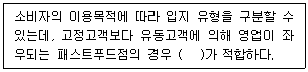
- 적응형 입지
- 생활형 입지
- 목적형 입지
- 집재성 입지
- 산재성 입지
(정답률: 알수없음)
45. 상권분석 및 입지선정과 직접적인 관련이 있는 정보기술로서 가장 옳지 않은 것은?
- 빅데이터(big data)
- 딥러닝(deep learning)
- 인공지능(AI)
- 가상현실(VR)
- 지리정보시스템(GIS)
(정답률: 알수없음)
3과목: 유통마케팅
46. 아래 글상자에서 효과적인 시장세분화 조건으로 옳은 것 만을 모두 나열한 것은?
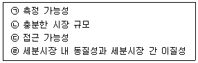
- ㉠, ㉡
- ㉡, ㉢
- ㉠, ㉡, ㉢
- ㉡, ㉢, ㉣
- ㉠, ㉡, ㉢, ㉣
(정답률: 알수없음)
47. 다음 중 상품관리에 대한 설명으로 가장 옳지 않은 것은?
- 상품믹스(product mix)란 소매상들이 고객들에게 제공하고자 하는 모든 상품 및 서비스의 구성을 의미한다.
- 상품믹스(product mix)의 결정이란 상품의 다양성(variety), 상품의 구색(assortment), 상품의 지원(support) 등 구성요인을 결정하는 것을 의미한다.
- 상품계열(product line)이란 상품의 품목(item) 수를 의미한다.
- 상품믹스의 폭(width)은 서로 다른 상품계열(product line)의 수를 의미한다.
- 상품지원(support)은 특정 상품 품목의 매출을 위해 소매점이 보유해야 하는 상품재고단위의 수를 의미한다.
(정답률: 알수없음)
48. 아래 글상자에서 설명하는 용어로 옳은 것은?
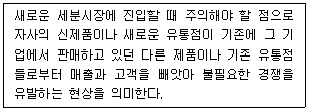
- 차별화포지셔닝
- 조직시너지
- 직접경쟁포지셔닝
- 자기잠식
- 리포지셔닝
(정답률: 알수없음)
49. 아래 글상자에서 설명하는 서비스 품질 접근법으로 옳은 것은?
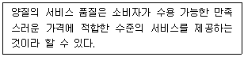
- 선험적 접근
- 상품 중심적 접근
- 사용자 중심적 접근
- 제조 중심적 접근
- 가치 중심적 접근
(정답률: 알수없음)
50. 마이클 포터의 다섯 가지 경쟁요인 모형(5 forces model)을 통한 시장 매력도 평가에 관한 내용으로 가장 옳지 않은 것은?
- 새로운 경쟁자들이 쉽게 들어올 수 있는 시장은 시장매력도가 낮다.
- 공급자의 교섭력이 높아질수록 그 시장의 매력도는 낮아진다.
- 경쟁자들과의 차별화가 낮아질수록 그 시장의 매력도는 높아진다.
- 산업 구조분석에서 다루는 시장매력도는 산업 전체의 잠재적 평균 수익을 의미한다.
- 5 forces model은 누가 경쟁자이고, 누가 공급자이며, 누가 구매자인지가 분명히 구분된다는 것을 가정하고 있다.
(정답률: 알수없음)
51. 촉진 믹스 전략에 대한 내용으로 가장 옳지 않은 것은?
- 푸시 전략은 제조업자가 유통업자들을 대상으로 주로 판매촉진과 인적판매 수단을 동원하여 촉진활동을 하는 것이다.
- 푸시 전략은 최종 구매자들의 브랜드 애호도가 낮을 때 적합하다.
- 풀 전략은 최종구매자를 대상으로 제품에 대한 정보를 제공하고 촉진활동을 하는 것이다.
- 홍보는 매체비용을 지불하지 않고 회사의 활동이나 상품에 대한 정보를 언론의 기사나 뉴스 형태로 내보내는 풀 전략 활동이다.
- 광고는 기업과 직·간접적으로 관련이 있는 여러 집단들과 좋은 관계를 구축하고 유지함으로써 기업이미지를 높이고 구매를 촉진하기 위해 수행하는 푸시 전략활동이다.
(정답률: 알수없음)
52. 제품수명주기(PLC) 단계 중 쇠퇴기의 특징 또는 상품관리 전략으로 옳지 않은 것은?
- 소비자가 제품정보를 가지고 있지 않기 때문에 상품을 널리 인지시켜 판매를 늘리는 것이 목표가 된다.
- 매출이 감소하고 이익이 매우 적어지게 되므로 가능한한 비용을 줄이고 매출을 유지하여 수익을 극대화 하여야 한다.
- 경쟁제품들이 시장에서 철수하게 되어 경쟁사의 수는 감소한다.
- 취약한 중간상을 제거하고 우량 중간상만 유지하며, 최소한의 이익을 유지하는 저가격 정책을 사용하게 된다.
- 매출액이 적은 품목은 제거하고 기여도가 높은 품목만 남기며, 과잉설비를 제거하고 하청을 늘리게 된다.
(정답률: 알수없음)
53. 인터넷을 활용한 소매점 이벤트 프로모션의 유형 중 정보제공형 이벤트 프로모션에 대한 설명으로 옳지 않은 것은?
- 설문, 아이디어 공모전, 정보사냥 등 의견참여 기회를 제공하는 인터넷 이벤트 프로모션이다.
- 정보제공형 이벤트 프로모션을 진행하기 위해서는 표적시장을 명확히 정하는 것이 중요하다.
- 다른 인터넷 이벤트 프로모션의 유형에 비해 적극적인 고객참여를 유도할 수 있어 메시지 전달력이 높다.
- 이벤트 주최자는 해당 인터넷 이벤트 프로모션을 통해 원하는 정보를 더욱 정확하게 얻을 수 있다.
- 고객의 참여기회가 많으며 이벤트 응모율이 높다.
(정답률: 알수없음)
54. 기업에 대해 고객이 창출해주는 모든 미래의 경제적 가치를 현재가치로 할인한 것으로 고객에 대한 장기간의 경제적 가치를 설명하는 개념의 약어로 옳은 것은?
- RFM
- CLV
- CE
- NPS
- RLC
(정답률: 알수없음)
55. 다음 중 온라인 판매 채널을 추가함으로써 얻을 수 있는 혜택으로 가장 옳지 않은 것은?
- 지역 상권에 제한되지 않고 시장을 확장할 수 있다.
- 더 깊고 넓은 상품구색을 제공할 수 있다.
- 소비자의 구매 결정에 도움이 되는 더 많은 양의 정보를 제공할 수 있다.
- 채널 간 갈등을 낮춰 고객에게 통합된 경험을 제공할 수 있다.
- 소비자 구매에 대한 정보를 수집하여 개인 맞춤형 제품을 제공할 수 있다.
(정답률: 알수없음)
56. 검색엔진 최적화(SEO: search engine optimization)의 성과지표 중 하나로, 검색엔진을 통해 웹사이트에 유입된 방문자 수치를 의미하는 것으로 옳은 것은?
- 이탈률(bounce rate)
- 오가닉 트래픽(organic traffic)
- 페이드 트래픽(paid traffic)
- 평균 세션 시간(average session duration)
- 페이지 로드 시간(page load time)
(정답률: 알수없음)
57. 다음 중 마케팅을 위한 소셜미디어의 장점에 대한 설명으로 가장 옳지 않은 것은?
- 소셜미디어는 표적화되고 개별화되어 있다는 장점이 있다.
- 소셜미디어는 상호작용적이어서 소비자의 의견 및 피드백을 얻는 데 이상적인 도구이다.
- 소셜미디어는 브랜드의 근황 및 활동에 관한 마케팅 콘텐츠를 시의적절하게 제공할 수 있다.
- 소셜미디어를 활용한 마케팅은 비용이 무료라는 장점이 있다.
- 소셜미디어는 고객의 경험을 형성하고 공유하는 데 적합하다.
(정답률: 알수없음)
58. 아래 글상자의 설명에 해당하는 용어로 옳은 것은?
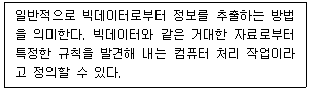
- 메모리 컴퓨팅
- 데이터 시각화
- 데이터 마이닝
- 텍스트 시각화
- 연관성 분석
(정답률: 알수없음)
59. 상품을 구매할 때, 자신이 고려하는 모든 속성들이 정해 놓은 최소한의 기준치를 충족시키는지 여부를 한꺼번에 평가하여 대안을 선택하는 고객 의사결정모형으로 옳은 것은?
- 사전찾기식 모형
- 순차적 제거식 모형
- 결합식 모형
- 분리식 모형
- 다속성 선호도 모형
(정답률: 알수없음)
60. 다음 중 탐색적 조사에 관한 설명으로 옳은 것은?
- 특정 이슈나 대상에 대한 사전 정보가 적을 때 전반적인 시장환경 및 문제점을 파악하기 위해 수행한다.
- 관심이 있는 특정 상황이나 응답자의 특정 행동에 대한 실태를 파악하고 예측하기 위한 조사이다.
- 조사대상으로부터 수집한 자료를 분석하여 특정 대상 및 현상을 요약하고 묘사함으로써 드러나지 않은 특성을 구체화할 수 있다.
- 예측하고자 하는 효과에 대한 가설을 세우고 검증하는 조사로 다양한 가설을 검증해 볼 수 있다.
- 대부분 직접 자료를 수집하여 정량적 인과관계를 분석하기 때문에 상대적으로 시간과 비용을 단축할 수 있다.
(정답률: 알수없음)
61. 다음 중 가격경쟁을 최소화할 수 있다는 장점과 고객측면을 전혀 고려하지 않는다는 단점을 동시에 가지고 있는 가격결정 방법으로 가장 옳은 것은?
- 원가기준법
- 목표수익률기준법
- 경쟁기준법
- 지각된 가치기준법
- 수요기준법
(정답률: 알수없음)
62. 관계지향적 판매방식에 관한 내용으로 가장 옳지 않은 것은?
- 판매보다는 고객 요구를 이해하는 데 초점을 맞춘다.
- 설득, 화술, 가격 조건 등을 통해 신규고객을 확보하고 매출을 늘리고자 노력한다.
- 제품에 대해 설명하는 데 치중하기보다는 고객의 욕구를 이해하고 문제를 해결하는 데 중점을 둔다.
- 상호 신뢰와 신속한 반응을 통해 고객과 장기적인 관계를 형성하고자 한다.
- 단기적인 매출은 낮아질 수 있으나, 장기적인 매출은 높아지는 것이 일반적이다.
(정답률: 알수없음)
63. 점포를 구성하는 물리적 환경의 역할에 대한 설명으로 옳지 않은 것은?
- 패키지: 제품의 패키지가 소비자의 감각적 반응에 호소하도록 고안된 것처럼 물리적 환경은 점포의 첫인상을 만들거나 고객의 기대를 설정하는 역할을 한다.
- 편의제공: 환경 내에서 활동하는 사람들의 성과를 돕는 역할을 한다.
- 사회화: 잘 갖춰진 물리적 환경은 고객과 직원으로 하여금 기대된 역할과 행동을 하도록 돕는다.
- 차별화: 물리적 환경을 통해서 기업은 경쟁자와 차별화할 수 있고, 이를 통해 의도된 고객 세분화가 가능하다.
- 지표화: 이용 가능한 공간의 크기, 공간 내 사람의 수 등에 대한 객관적 평가를 제공한다.
(정답률: 알수없음)
64. 아래 글상자의 설명 중 격자형 레이아웃의 특징만을 나열한 것으로 가장 옳은 것은?
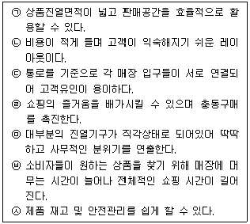
- ㉠, ㉡, ㉤
- ㉠, ㉡, ㉦
- ㉠, ㉢, ㉤
- ㉠, ㉡, ㉤, ㉦
- ㉠, ㉣, ㉤, ㉥
(정답률: 알수없음)
65. 매장 내부인테리어(interior) 관리에 대한 설명으로 가장 옳지 않은 것은?
- 내부인테리어는 고객의 구매욕구를 적극적으로 유발할 수 있도록 구성한다.
- 내부인테리어 중 향기와 음악은 고객의 기분에 영향을 미친다.
- 파이프나 배관과 같은 매장의 설비물은 내부인테리어를 구성하는 데 영향을 주지 않는다.
- 내부인테리어 중 매장의 온도는 고객의 기분에 영향을 미친다.
- 내부인테리어 중 조명시설은 고객의 구매욕구에 영향을 미친다.
(정답률: 알수없음)
66. 전략적 고객관리(strategic account management)의 특징으로 옳지 않은 것은?
- 전략적 고객관리는 지속가능한 경쟁우위의 원천이다.
- 전략적 고객관리의 관점에서 모든 종업원의 활동과 팀워크가 정렬되는 경우, 종업원의 만족이 증가하고 기업의 생산성과 수익성이 높아질 수 있다.
- 전략적 고객관리를 통해 일단 성공적으로 정렬된 조직구성원의 노력은 향후 고객의 욕구가 변화하더라도 적은 비용으로 변화시킬 수 있다.
- 전략적 고객관리를 통해 고객충성도를 높이는 것은 매우 어렵다.
- 전략적 고객관리를 통해 고객수익성을 높일 수 있다.
(정답률: 알수없음)
67. 고객관계관리(CRM)를 성공적으로 적용하기 위해서 고려해야 하는 요인으로 옳지 않은 것은?
- 판매자를 중심으로 모든 거래 데이터가 통합되어야 한다.
- 고객 분석을 위한 고객의 상세정보가 수집되어야 한다.
- 고객의 정의와 고객그룹별 관리 방침이 수립되어야 한다.
- 고객데이터의 분석 모형 개발 및 모형의 유효성 검증체제가 갖추어져야 한다.
- 고객 분석결과를 활용할 수 있도록 제반 업무절차가 정립되고 시행되어야 한다.
(정답률: 알수없음)
68. 다음은 마케팅 조사와 관련된 내용이다. 가장 옳지 않은 것은?
- 1차자료는 당면한 조사목적을 달성하기 위하여 조사자가 직접 수집한 자료이다.
- 기술조사는 표적모집단이나 시장의 특성에 관한 자료를 수집 · 분석하고 결과를 기술하는 조사이다.
- 2차자료는 당면한 조사목적이 아닌 다른 목적을 위해 과거에 수집되어 이미 존재하는 자료이다.
- 모든 마케팅 조사에는 2차자료가 반드시 필요하다.
- 심층인터뷰는 조사문제가 불명확할 때 기본적인 통찰과 아이디어를 얻기 위해 실시되는 조사이다.
(정답률: 알수없음)
69. 아래 글상자에서 설명하는 평가 기법으로 가장 옳은 것은?
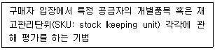
- 상시종업원당 총이익
- 평당 총이익
- 경로구성원 총자산 수익률
- 경로구성원 성과평가
- 직접제품이익
(정답률: 알수없음)
70. 다단계 판매의 특징으로 옳지 않은 것은?
- 다단계 판매의 상품구색은 다양하지만, 일반적으로 양호한 품질의 중저가 소비재를 중심으로 구성된다.
- 다단계 판매에서 판매원의 수입은 자신 및 하위 판매원의 판매액을 기초로 책정된다.
- 다단계 판매는 신규 판매원에게 가입비, 교육비, 상품구매비 등 과도한 가입비용을 요구한다.
- 다단계 판매는 강제적인 재고부담이 없다.
- 다단계 판매는 공제조합에 소비자피해보상보험 가입을 의무화하고 있다.
(정답률: 알수없음)
4과목: 유통정보
71. 유통업체에서 활용하는 판매시점관리 시스템에 대한 설명으로 가장 옳지 않은 것은?
- 유통업체에서는 판매시점관리 시스템을 통해 영업 및 서비스 업무를 효율적으로 처리하고 있다.
- 판매시점관리 시스템은 판매와 관련된 다양한 데이터 수집을 지원해 준다.
- 유통업체에서는 고객의 개인정보와 판매시점관리 시스템을 통해 확보한 데이터를 활용해서 보다 효율적인 마케팅을 수행할 수 있게 되었다.
- 판매시점관리 시스템의 스캐너는 바코드로부터 상품에 대한 데이터를 확보하도록 지원하는 입력장치이다.
- 유통업체에서는 판매시점관리 시스템 내의 고객 개인정보와 구매 이력에 대한 정보를 고객의 사전 승인없이 제조업체와 공유해서 활용할 수 있게 되었다.
(정답률: 알수없음)
72. QR코드에 대한 설명으로 가장 옳지 않은 것은?
- 바코드와 동일한 양의 자료를 표현하려면 QR코드 사각형 모양의 크기가 더 커야 한다.
- QR코드는 일부분이 손상되어도 바코드와 다르게 인식률이 높은 편이다.
- QR코드는 바코드에 비해 저장할 수 있는 정보의 양이 많다.
- QR코드는 숫자, 영문자, 한글, 한자 등 다양한 데이터를 처리하는 것이 가능하다.
- QR코드는 360° 어느 방향에서든지 인식이 가능하다.
(정답률: 알수없음)
73. 우리나라는 데이터 이용에 관한 규제 혁신과 개인정보보호 협치체계 정비의 문제를 해결하기 위해 관련 법을 개정하였다. 아래 글상자에서 데이터 3법에 해당되는 법률들을 모두 나열한 것으로 옳은 것은?
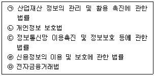
- ㉠, ㉡, ㉢
- ㉠, ㉡, ㉣
- ㉠, ㉢, ㉣
- ㉡, ㉢, ㉣
- ㉡, ㉣, ㉤
(정답률: 알수없음)
74. 노나카의 지식변환 4가지 유형과 그 설명이 가장 옳은 것은?
- 사회화(socialization) - 생각이나 노하우를 언어나 그림 등의 형태로 표현한다.
- 외부화(externalization) - 사제관계에서의 노하우(know-how)를 전수 받는다.
- 형식화(normalization) - 고객분석내용을 보고 고객행태유형을 체득한다.
- 내면화(internalization) - 인턴을 하면서 체득한 조직에서의 바른 생활을 블로그에 올려 예비 인턴들에게 공유한다.
- 종합화(combination) - 형식지에서 형식지를 얻는다.
(정답률: 알수없음)
75. 유통업체에서 활용하고 있는 ERP 시스템에 대한 발전 순서를 바르게 제시한 것은?
- ERP → Extended ERP → MRP → MRPⅡ
- ERP → Extended ERP → MRPⅡ → MRP
- MRP → MRPⅡ → ERP → Extended ERP
- MRP → ERP → Extended ERP → MRPⅡ
- ERP → MRPⅡ → Extended ERP → MRP
(정답률: 알수없음)
76. 글로벌기업이 공급사슬관리상에서 복잡한 물류체계를 효율적으로 운영하기 위해 추진하는 글로벌 물류전략 중 하나인 지연전략에 대한 설명으로 가장 옳지 않은 것은?
- 지연전략은 재고를 일반적 수준으로 적게 보유할 수 있게 한다.
- 지연전략 이점을 최대한 활용하기 위해서는 중앙집중화를 고려한 제품설계가 필요하다.
- 지역적 매출량 예측이 전 세계 매출량을 예측하는 것보다 어렵기 때문에 지연전략은 글로벌시장에서 효과적인 전략이다.
- 지연전략은 재고 유연성을 확보하게 되는데, 그것은 동일한 요소, 모듈 또는 플랫폼이 다양한 종류의 최종제품에서 구현되는 것을 의미한다.
- 지연전략은 공통 플랫폼, 요소 또는 모듈을 이용하여 제품을 디자인하고 최종목적지 또는 고객 요구사항이 알려질 때까지 최종조립을 늦추는 전략이다.
(정답률: 알수없음)
77. 공급사슬관리를 위한 QR시스템의 특징에 대한 설명으로 가장 옳지 않은 것은?
- QR은 제조업체 중심으로 신속한 대응을 핵심으로 한다.
- Harris et al.(1999)의 연구에 의하면 JIT에서 발전해 QR의 개념이 형성되었고, QR이 발전해 ECR의 개념이 형성되었다.
- QR은 유통업체 및 소매업체를 중심으로 효율적인 고객대응을 위해 1993년 식품, 잡화, 슈퍼마켓 업계에서 출현하였다.
- QR의 핵심은 생산자 사이에 걸쳐있는 유통경로 상의 제약조건 및 재고를 줄임으로써 제품 공급사슬의 효율성을 극대화하는 데 있다.
- QR의 목적은 IT기술을 이용하여 조직의 효율성을 높이고 공급사슬파트너와의 협업과 조화를 통하여 비용을 절감하고, 수익을 창출하는 데 있다.
(정답률: 알수없음)
78. 전자서식교환(EDI)은 웹, 클라우드와 결합된 형태로 진화하고 있다. EDI에 관련된 내용으로 가장 옳지 않은 것은?
- 기업 간 전자상거래 서식 또는 공공 서식을 서로 합의된 표준에 따라 표준화된 메시지 형태로 변환해 거래 당사자끼리 통신망을 통해 교환하는 방식이다.
- 통신 링크를 통해 한 컴퓨터 애플리케이션에서 다른 컴퓨터 애플리케이션으로 사전 정의된 형식의 전자데이터를 전송하는 방법이다.
- 웹 EDI 서비스는 전세계 어디서나 이용가능하다는 장점에 비해 고가의 특별한 접속 프로그램이 필요하며 보안에 취약하다는 단점이 있다.
- EDI는 문서거래시간의 단축, 자료의 재입력 방지, 업무처리의 오류감소 등의 직접적 효과가 있다.
- EDIFACT는 여러 행정, 상업 및 운송을 위한 전자 자료 교환이라는 뜻이다.
(정답률: 알수없음)
79. 아래 글상자의 신규고객 창출 프로세스를 순서대로 나열한 것으로 옳은 것은?
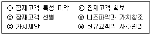
- ㉠-㉡-㉢-㉣-㉤-㉥
- ㉠-㉡-㉢-㉤-㉣-㉥
- ㉠-㉡-㉣-㉢-㉤-㉥
- ㉠-㉢-㉡-㉣-㉤-㉥
- ㉠-㉢-㉣-㉡-㉤-㉥
(정답률: 알수없음)
80. 아래 글상자에서 설명하는 전자지갑형 전자화폐로 가장 옳은 것은?(문제 오류로 가답안 발표시 1번으로 발표되었지만 확정답안 발표시 1, 4, 5번이 정답처리 되었습니다. 여기서는 가답안인 1번을 누르시면 정답 처리 됩니다.)
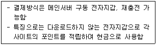
- 앤캐시
- 뱅크타운
- 아이캐시
- 애니카드
- 사이버패스
(정답률: 알수없음)
81. 아래 글상자의 OECD 프라이버시 8대 원칙에 대한 설명 중 옳지 않은 것만을 나열한 것은?
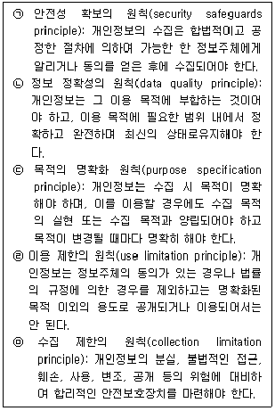
- ㉠, ㉡
- ㉠, ㉢
- ㉠, ㉤
- ㉢, ㉣
- ㉣, ㉤
(정답률: 알수없음)
82. 아래 글상자에서 설명하는 잠재고객 발굴을 위한 기존 고객에 대한 CRM 분석 방법으로 가장 옳은 것은?
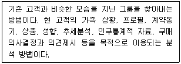
- 아웃바운드 분석
- 인바운드 고객분석
- 하우스 홀딩 분석
- 현재 고객 구성원 분석
- 캠페인 효과 분석과 최적 고객 추출
(정답률: 알수없음)
83. 클라우드 컴퓨팅 서비스 지원 수준에 따라 구분된 유형으로 가장 옳은 것은?
- 개인용 컴퓨팅 환경, 클라이언트-서버 환경, 클라우드 컴퓨팅 환경
- IaaS(infrastructure as a service), PaaS(platform as a service), SaaS(software as a service)
- 플랫폼, 운영체계, 디바이스
- 운영체계, 응용 소프트웨어, 클라이언트
- 클라우드, 엣지, 디바이스
(정답률: 알수없음)
84. 메타버스를 구현하는 주요 기반 기술과 그 설명이 가장 옳지 않은 것은?
- XR(eXtended Reality) 기술 - 현실과 가상 세계를 연결하는 인터페이스로, 현실과 가상세계의 공존을 촉진하고 몰입감 높은 가상융합 공간과 디지털 휴먼 등을 구현하는 데 활용된다.
- 디지털트윈 기술 - 가상세계에 현실세계를 3D로 복제하고 동기화한 뒤 시뮬레이션·가상훈련 등을 통해 지식의 확장과 효과적 의사결정을 지원하는 데 활용된다.
- 블록체인 기술 - 메타버스 창작물에 대한 저작권 관리, 사용자 신원 확인 및 데이터 프라이버시 보호, 콘텐츠 이용 내역 모니터링 및 저작권료 정산 등을 지원하는 데 활용된다.
- 인공지능 기술 - 이용자 요구나 수요 변화에 따라 컴퓨팅 자원을 유연하게 배분하여 활용된다.
- 데이터 분석 기술 - 실세계 데이터 취득 및 유효성 검증, 데이터 저장·처리·관리 등에 활용된다.
(정답률: 알수없음)
85. 아래 글상자의 융합기술 발전 2단계에 부합하는 사례만을 나열한 것으로 가장 옳은 것은?
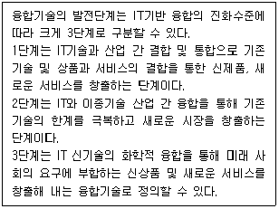
- IPTV, 휴대형 PC
- IPTV, 휴대형 PC, 지능형 자동차
- IT 융합건설, 지능형 자동차, 수중에너지 탐사로봇시스템
- IT 융합건설, 휴대형 PC, 수중에너지 탐사로봇 시스템
- IPTV, 지능형 자동차, 수중에너지 탐사로봇 시스템
(정답률: 알수없음)
86. 아래 글상자에서 설명하는 데이터베이스의 종류로 가장 옳은 것은?
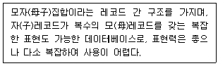
- RDB(관계형 데이터베이스)
- HDB(계층형 데이터베이스)
- NoSQL(비정형 데이터베이스)
- NDB(네트워크 데이터베이스)
- OODB(객체지향형 데이터베이스)
(정답률: 알수없음)
87. CRM 시스템에 대한 설명으로 가장 옳지 않은 것은?
- CRM 시스템은 신규고객 창출, 기존고객 유지, 기존 고객 강화를 위해 이용된다.
- 기업에서는 장기적 측면의 고객관계 강화보다는 단기적 측면의 고객관계 강화를 위해 CRM 시스템을 도입하고 있다.
- CRM 시스템은 다양한 측면의 고객 정보를 분석해 고객에 대한 이해도를 높여준다.
- CRM 시스템은 유통업체의 경쟁우위 창출에 도움을 제공한다.
- CRM 시스템은 고객유지율 개선 및 경영성과 개선을 위해 고객정보를 활용한다.
(정답률: 알수없음)
88. 전사적자원관리(ERP)와 관련된 내용으로 가장 옳지 않은 것은?
- ERP의 목적은 통합관점에서의 정보자원관리이다.
- ERP는 회계, 재무, 조달, 프로젝트 관리, 공급망 관리 및 제조 같은 조직의 일상적인 비즈니스 활동을 전사적으로 지원한다.
- ERP는 여러 비즈니스 프로세스를 한데 묶어 각 프로세스 간 데이터의 흐름을 가능하게 해준다.
- SaaS ERP는 온프레미스(on-premise) ERP에 비해 초기 착수 비용이 상대적으로 적게 소요된다.
- 온프레미스(on-premise) ERP는 SaaS ERP에 비해 즉각적인 확장성과 안정적 운영이 보장된다는 장점이 있다.
(정답률: 알수없음)
89. 아래 글상자의 괄호 안에 들어갈 용어로 가장 옳은 것은?
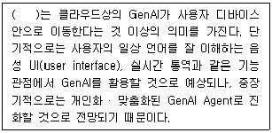
- 온디바이스(on-device) GenAI
- 규칙 기반(rule based) AI
- 생성형(generative) AI
- 딥러닝기반 AI
- 영상지원 AI
(정답률: 알수없음)
90. 다음 보기에 제시된 4가지 개념을 가치가 낮은 개념에서 높은 개념 순서로 바르게 나열한 것으로 옳은 것은?
- 데이터 → 지혜 → 정보 → 지식
- 데이터 → 지식 → 정보 → 지혜
- 데이터 → 정보 → 지식 → 지혜
- 지식 → 데이터 → 정보 → 지혜
- 지혜 → 지식 → 정보 → 데이터
(정답률: 알수없음)